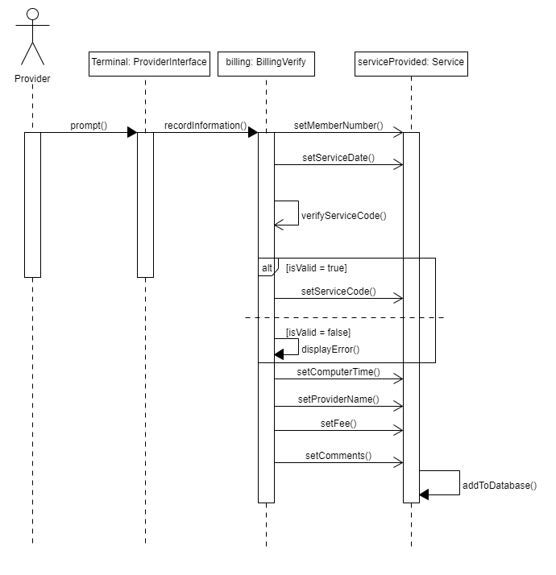
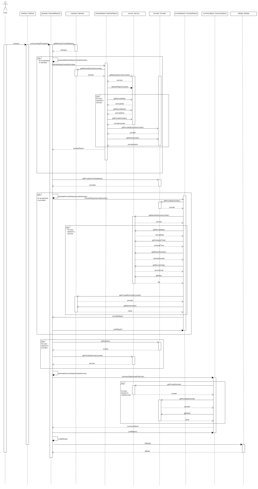

Submitter is Joseph Daly
Joseph Daly CWID: 11988309 jrdaly2@crimson.ua.edu - Time spent: 11 hours
David Dillard CWID: 11943697 dldillard@crimson.ua.edu - Time spent: 11 hours
Jacob Pacheco CWID: 12016535 jmpacheco@crimson.ua.edu - Time spent: 11 hours
Zachary Stiles CWID: 12018285 zmstiles@crimson.ua.edu - Time spent: 14 hours
Jacob Grinstead CWID: 12018239 jgrinstead@crimson.ua.edu - Time Spent: 11 hours

Joseph Daly (20%):
- wrote HTML for all html files (100%)
- Task 2- created sequence diagrams for write eft data, request summary report, and request provider directory (100%)
David Dillard (20%):
- Task 2 - created sequence diagrams for BillChocAnForServices and RunAccountingProcedure (100%)
Jacob Pacheco (20%):
- Task 3- wrote coupling and cohesion statement(100%)
- Task 2- created sequence diagrams for verify member card, request member report, and request provider report (100%)
Zachary Stiles (20%):
- Task 1 - made class diagram (100%)
- Task 2 - assisted in sequence diagrams correlation with class diagram (100%)
- rearranged stereotype class diagram for simplification purposes (100%)
Jacob Grinstead (20%):
- Task 2 - created sequence diagrams for manage member, manage provider, update member, update provider, add member, add provider, delete member, and delete provider (100%)
- Fixed issues present with the main activity diagram using project 2 feedback (100%)
Below is the main class diagram for the ChocAn service.

Below are the sequence diagrams for the manage, add, delete, and update member use cases in order.


Below are the sequence diagrams for the manage, add, delete, and update provider use cases in order.


Below is the sequence diagram for the generate member report use case.

Below is the sequence diagram for the generate provider report use case.

Below is the sequence diagram for the request provider directory use case.

Below is the sequence diagram for the request summary report use case.

Below is the sequence diagram for the verify member card use case.

Below is the sequence diagram for the write eft data use case.

Below is the sequence diagram for the bill ChocAn use case.
Below is the sequence for the main accounting procedure use case.
Within our design, we demonstrate a high degree of cohesion while maintaining a low amount of coupling between modules, a necessity for a good design.
Many of our classes have very concise methods that all pertain to one object without requiring much more than user input and the class itself.
For our main data objects we have all related functions within the classes themselves for easier readability making a more cohesive design overall.
As for the connections between classes, we’ve made them as simple as possible to allow easier following of the flow of the design.
We pass simple data types or data structures only when necessary to avoid later confusion when implementing the design and make sure to use every part of said data structures to avoid wasted resources.
These decisions within our design help to minimize the structure of our diagrams and will allow us to much more efficiently implement our design in a later project.